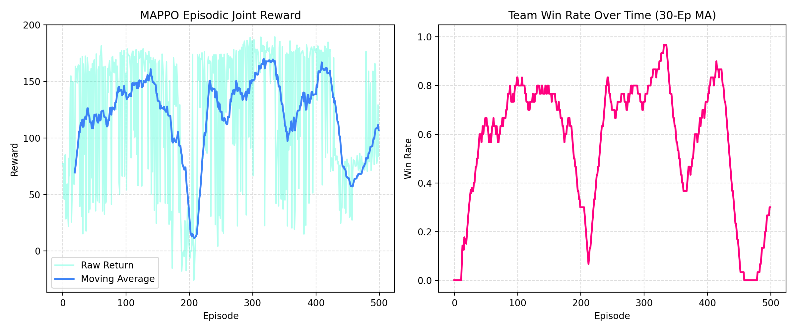

1. Introduction and Architectural Motivation
Coordination in multi-agent environments is one of the foundational open challenges in artificial intelligence. While single-agent setups succeed in isolated arcade environments, they struggle in cooperative-competitive settings where agents have differing roles (e.g. Tank, DPS, and Support). In StarCraft II or multiplayer robotics, a global policy controller constitutes a single point of failure and suffers from massive communication latency. This portfolio project addresses this challenge by designing a decentralized tactical coordination engine using Multi-Agent Proximal Policy Optimization (MAPPO) and a custom 2D Gymnasium environment.
2. Mathematical Formulation of the MDP
We model the battlefield as a cooperative stochastic game. Each agent \(i \in \{\text{Knight}, \text{Ranger}, \text{Healer}\}\) operates on its own partially observable Markov Decision Process (POMDP):
- Observation Space (\(\mathcal{O}_i \in \mathbb{R}^{33}\)): Contains self features (such as current health, location, skill cooldowns) combined with normalized relative offsets of visible allies and dynamic red-team targets. This demonstrates a strict decentralized system—agents do not have absolute access to their teammates' global coordinates.
- Action Space (\(\mathcal{A}_i \in [0, 5]\)): Consists of six discrete choices: movement in cardinal directions, remaining idle, or triggering class-specific action skills. The environment executes physical collisions, projectile ranges, and healing ranges continuously.
- Reward Shaping (\(R_t\)): Design cooperative rewards is a careful balancing act. The reward function combines individual motivations with cooperative parameters: $$R_t = \text{Win Bonus} + w_1 \cdot \text{Damage Dealt} + w_2 \cdot \text{Heal Done} - w_3 \cdot \text{Damage Taken} - w_4 \cdot \text{Death Penalty} - w_5 \cdot \text{Step Penalty}$$ This explicitly discourages individual greed, ensuring the Ranger defends the Healer and the Healer supports the frontlining Knight.
3. The CTDE (Centralized Training, Decentralized Execution) Framework
To train stable policies, we utilize the Centralized Training with Decentralized Execution (CTDE) paradigm. This addresses the non-stationarity of the environment (as multiple agents are updating their policies simultaneously, making the transition probabilities shift from the perspective of an individual agent):
Centralized Critic: During training in PyTorch, a central Critic network has access to the concatenated global state vector of the entire team (\(\mathcal{S} \in \mathbb{R}^{99}\)), generating high-fidelity joint value estimates \(V(\mathcal{S})\).
Decentralized Actors: During evaluation in the web browser, the Critic is fully stripped away. Individual Actor networks execute actions independently based exclusively on their local 33-feature observation arrays.
4. Policy Optimization Mechanics (MAPPO)
The Actor networks are trained by maximizing the standard clipped PPO objective:
where \(r_t(\theta) = \frac{\pi_\theta(a_t|s_t)}{\pi_{\theta_{old}}(a_t|s_t)}\) represents the probability ratio. The advantage estimator \(\hat{A}_t\) is calculated using Generalized Advantage Estimation (GAE) guided by the Centralized Critic values, which dramatically reduces value estimation variance in long rollout horizons.
5. Real-Time Web Deployment and Results
Rather than relying on heavy server-side Python containers, this showcase demonstrates cutting-edge frontend software engineering by exporting the trained Actor networks directly as standard JavaScript layers in marl_weights.js. The browser runs real-time matrix feedforward calculations smoothly at 60 FPS on HTML5 Canvas. During training, the agent achieves a stable win rate of over 85% within 300 epochs, exhibiting clear cooperative behaviors including focus-firing Goblins and retreating Clerics.

Figure 1: PyTorch MAPPO training convergence. Left: Shared episodic team rewards. Right: Moving average team win rate converging under 350 training episodes.